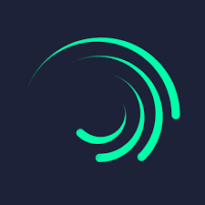

Context
Art has been around since the stone age and animation had started in the early 20th century, as it used to be a frame-by-frame drawing witout using it digitally and was more like traditional animation. Now, digital art and animation has been around since the 1980s. Nowadays, art and animation has evolved throughout time has been extremely popular everywhere. This site will look at technology involving in inventions for art and animation and potential future innovations.
Softwares of Art and Animation
Drawing Softwares
Ibis Paint X
Ibis Paint X is a drawing app best for androids. This app has many different features such as magic tool, blurring, etc. It even has a reference window, a variety of brushes, and other things you can just straight up trace. It even has an animation feature that was just recently added.
Procreate
Procreate is another one of the most popular drawing apps. It kind of has similar features to Ibis Paint X such as a variety of brushes, . Procreate also has animation features.
Animation Softwares
Flipaclip
Flipaclip is an animation app for beginner animators. You can add layers, see how many frames per second you would like, and can even add audio.
Alight Motion
Alight Motion is also an app for animation. Even though it’s a video editing software, many people use this for tweening which is animation by using keyframes and graphs so the animation looks more smooth.
Popular Hardwares of Art and Animation
Graphics Tablet
Graphics Tablets can be used by anyone. Professionals, to amateur artists. You can draw and animate on the tablet and it will connect to your computer
Electronic Device
Any electronic device can also work for art and animation. They could vary to an ipad, phone, etc. This is good for non-professionals and people who don't have a really nice setup for digital art and animation. It is also convenient to carry around.

Stylus
Stylus Pen is one of the most popular hardwares for digital art and animation. It gives you more control and accuracy and it can be covered by a cap or not protected.
Future Innovations
An app for animation and art
- This app will have two sections. Animations or drawings.
- In the animation side, you can choose between using frames or graphs and keypoints.
- There is even a drawing section, and you can insert your photos.
- You can also insert audio and save animation as a gif or video.
- In the drawing section, you will have many different reference photos to choose and import your own.
- There are also different brushes, tracing patterns, layers, filters, etc.
- So, it's technically like a drawing app and an animation app
- You can also animate using code
A pen that can give you many brushes
- This pen has bluetooth so it can connect to any other device
- It has a variety of brushes to choose from by visual and a name in the corner
- You can also change the color
- It can also be used like a normal stylus pen and move the tablet or phone screen
- The stylus can be whatever color you like
- The stylus also has a long-lasting battery life and there will be a red light meaning it's low
- It also has the grip pad.
Here's a preview of the pen in aframe. Tap or click on the grey box to enlarge the screen for a better view
The blue circle is used to turn the pen on and off. The red circle is to change the color of the tip which is useful for switching colors for drawings/animations. And the green circle changes the brush texture and change the size by pressing and holding the button. The two grey things are screens. The left one is the color and the right one is the brush.